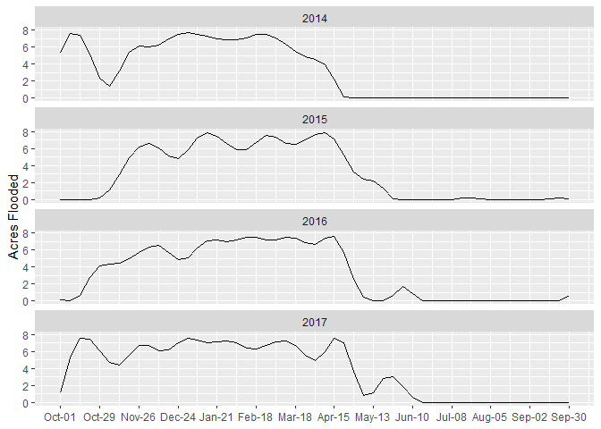

WHAT supports estimation of wetland water management schedules in California’s Central Valley through analysis of near-real-time, automated hydrological data from Point Blue’s Water Tracker.
Water Tracker uses LandSat satellite imagery to detect open surface water in the Central Valley and estimate the proportion of a given spatial unit that is flooded on a given date. WHAT supports estimating the typical maximum extent of flooding in individual units across multiple water years, variation in the timing and extent of flooding among water years, and estimating the timing of water management schedules, such as floodup and drawdown.
WHAT is intended for application to spatial units representing individual wetland management units, and provides support for summarizing across multiple units within a larger region, such as a Groundwater Sustainability Plan area. Known and likely wetland management unit boundaries have already been integrated into WaterTracker’s automated processing of satellite imagery, to facilitate application of tools in the WHAT package, but hydrological data within custom boundaries can also be requested from WaterTracker by uploading a shapefile or drawing a custom spatial area.
Installation
You can install the development version of WHAT from GitHub with:
# install.packages("devtools")
devtools::install_github("pointblue/WHAT")Examples
Using sample data included, estimate the 95th percentile of the wetted area detected in each wetland management unit over all water years included:
library(WHAT)
data(sampledat)
dat <- format_watertracker(sampledat[sampledat$WETLAND == 'SampleWetland1',]) |>
estimate_flood_extent(prob = 0.95)
dplyr::select(dat, unit, ObservedAreaWaterHa_pq) |> dplyr::distinct()
#> # A tibble: 9 × 2
#> unit ObservedAreaWaterHa_pq
#> <chr> <dbl>
#> 1 SampleWetland1_Unit1 24.8
#> 2 SampleWetland1_Unit2 3.05
#> 3 SampleWetland1_Unit3 0.261
#> 4 SampleWetland1_Unit4 2.43
#> 5 SampleWetland1_Unit5 0.285
#> 6 SampleWetland1_Unit6 0.0564
#> 7 SampleWetland1_Unit7 36.7
#> 8 SampleWetland1_Unit8 51.0
#> 9 SampleWetland1_Unit9 6.75Interpolate the extent of flooding onto a common set of dates to explore variation across water years (for an individual unit or combinations of units):
dat_interp = interpolate_flooding(
dat[dat$unit == 'SampleWetland1_Unit2',],
wateryear = c(2014, 2015, 2016, 2017),
interval = 'week')
library(ggplot2)
ggplot(dat_interp, aes(interval, AreaWater_ac)) +
geom_line() +
facet_wrap(~wateryear, ncol = 1) +
scale_x_continuous(breaks = seq(1, 53, 4),
labels = dat_interp$date[seq(1, 53, 4)] |> format('%b-%d')) +
labs(x = NULL, y = 'Acres Flooded')
Interpret the sequence of WaterTracker observations to detect monthly modes in each unit, and optionally generalize across multiple water years to estimate the general wetland management schedule:
estimate_flood_delta(dat[dat$unit == 'SampleWetland1_Unit2',]) |>
estimate_wetland_mode() |>
generalize_wetland_mode() |>
dplyr::select(month_name, mode, weight) |>
print(n = 12)
#> # A tibble: 12 × 3
#> month_name mode weight
#> <fct> <fct> <dbl>
#> 1 Oct F 0.636
#> 2 Nov M 0.8
#> 3 Dec M 1
#> 4 Jan M 1
#> 5 Feb M 1
#> 6 Mar M 1
#> 7 Apr D 0.455
#> 8 May N 0.455
#> 9 Jun N 0.727
#> 10 Jul N 1
#> 11 Aug N 1
#> 12 Sep N 0.818